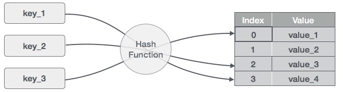

The Collection Interfaces
Java cung cấp 1 list các interface dưới đây để support cho cái Frameworks này.

| Sr.No. | Interface & Description | Lưu ý |
|---|---|---|
| 1 | The Collection Interface
This enables you to work with groups of objects; it is at the top of the collections hierarchy. |
Cái này là cái interface cha |
| 2 | The List Interface
This extends Collection and an instance of List stores an ordered collection of elements. |
Cái này là cái cơ bản nhất của Collections, đưa các elements vào 1 danh sách, 1 list. |
| 3 | The Set
This extends Collection to handle sets, which must contain unique elements. |
Khác với cái trên kia, đối với cái này, mỗi element là 1 phần tử unique. List thì có thể có nhiều thằng giống nhau, còn cái này chỉ tồn tại duy nhất 1 objects trong dãy (nó chỉ xuất hiện 1 lần thì đúng hơn). |
| 4 | The SortedSet
This extends Set to handle sorted sets. |
Nó là extends từ cái Set trên kia, khác là nó có thứ tự. Cái Set add vào sao thì nó luôn như vậy, nhưng cái này nó sẽ được sắp xếp lại. |
| 5 | The Map
This maps unique keys to values. |
Map là một tập hợp key - value. Trong một map thì Key là unique. |
| 6 | The Map.Entry
This describes an element (a key/value pair) in a map. This is an inner class of Map. |
Nó là 1 Inner Class của thằng Map trên kia. Nó mô tả (describes) các elements bên trong Map. |
| 7 | The SortedMap
This extends Map so that the keys are maintained in an ascending order. |
Cái này là exends từ cái Map trên kia, chỉ khác là các key vào nó sẽ được order lại. Tức là nó ko quan tâm thứ tự việc push vào các key, vì sau đó nó sẽ sắp xếp lại nó. |
| 8 | The Enumeration
This is legacy interface defines the methods by which you can enumerate (obtain one at a time) the elements in a collection of objects. This legacy interface has been superceded by Iterator. |
Cái Enumeration này là một Interface giúp duyệt các elements trong 1 collections mà đã học hôm trước. Thằng này và cái Iterator khá giống nhau, nhưng thằng Iterator là mở rộng hơn của nó thôi. |
The Collection Classes
Java cũng cung cấp 1 set standard collection classes để thực hiện việc implements các interface trên kia. Một số classes cung cấp đầy đủ việc triển khai các interface trên kia, nhưng cũng có các abstract class cung cấp các khung xương được sử dụng làm điểm bắt đầu để tạo ra các collections cụ thể.
| Sr.No. | Class & Description | Lưu ý |
|---|---|---|
| 1 | AbstractCollection Implements most of the Collection interface. |
Thằng này là cha tất cả. |
| 2 | AbstractList Extends AbstractCollection and implements most of the List interface. |
Nó là cái implements của List Interface |
| 3 | AbstractSequentialList Extends AbstractList for use by a collection that uses sequential rather than random access of its elements. |
Collections tuần tự, tức là chỉ có thể duyệt từ trên xuống dưới |
| 4 | LinkedList
Implements a linked list by extending AbstractSequentialList. |
Các Elements chứa thông tin của next và previous elements của nó, khi duyệt khá chậm vì phải duyệt theo thông tin elements, ko phải là index. |
| 5 | ArrayList
Implements a dynamic array by extending AbstractList. |
Tạo ra một dynamic array bằng cách extens Abstract List. Cái này duyệt theo index nên khá nhanh. |
| 6 | AbstractSet Extends AbstractCollection and implements most of the Set interface. |
Abstract Set |
| 7 | HashSet
Extends AbstractSet for use with a hash table. |
HashSet là một extend của Abstract Set. Nó ko thread-safe, và không cho phép store duplication objects. |
| 8 | LinkedHashSet
Extends HashSet to allow insertion-order iterations. |
Linked Hash Set khác với cái Hash Set ở chỗ, nó là có thứ tự (insertion-order). Tương tự Hash Set, Nó ko thread-safe, và không cho phép store duplication objects. |
| 9 | TreeSet
Implements a set stored in a tree. Extends AbstractSet. |
Tree set được extends từ AbstractSet. Mục đích chính của Tree Set đó là sorting. Sorting này không phải theo thứ tự insert vào, mà theo thứ tự cây của key value. Tương tự Hash Set, Nó ko thread-safe, và không cho phép store duplication objects. |
| 10 | AbstractMap Implements most of the Map interface. |
____________________ |
| 11 | HashMap
Extends AbstractMap to use a hash table. |
|
| 12 | TreeMap
Extends AbstractMap to use a tree. |
____________________ |
| 13 | WeakHashMap
Extends AbstractMap to use a hash table with weak keys. |
____________________ |
| 14 | LinkedHashMap
Extends HashMap to allow insertion-order iterations. |
____________________ |
| 15 | IdentityHashMap
Extends AbstractMap and uses reference equality when comparing documents. |
____________________ |
So sánh Hash Set, Tree Set và Linked Hash Set.
Dưới dây là sự giống và khác biệt giữa 3 cái này
| Hash Set | Linked Hash Set | Tree Set | |
|---|---|---|---|
| Giống nhau | |||
| Push object vào một storage. Không cho phép duplication objects | |||
| Đều khong phải là thread-safe. Đối với môi trường Multiple Thread, thì cần synchronized nó. | |||
| Fail-Fast Iterator. Nếu Map bị thay đổi sau khi được khởi tạo (mà ko phải bởi method remove của Iterator) thì sẽ ném ra ConcurrenceModificationExceptions. | |||
| Điểm khác biệt | |||
| Performance and Speed | Nhanh nhất. O(1) | Đứng thứ 2. O(1) | Chậm nhất. Vì sau mỗi lần insert vào nó cần sort lại. O(log(n) |
| Ordering | Không, và cũng chả hiểu nó sắp xếp như thế nào luôn. | Order của nó là thứ tự push-insertion vào | Order của nó là order từ method Sort của TreeSet. |
| Internal Implementation | Implement HashMap Interface | Implements HashSet Interface và LinkedList | Tree map. |
| null ??? | Cho phép | Cho phép | Không cho phép, throw ra null pointer exception. |
| Comparison | Sử dụng method equals() | Sử dụng method equals() | Sử dụng compareTo() |
So sánh ArrayList, Vector and LinkedList
| ArrayList | Vector | LinkedList | |
|---|---|---|---|
| Giống nhau | |||
| Cùng chung mục đích là dùng để lưu trữ object - collections, nhưng mà cách nó impelements các method không giống nhau. | |||
| Đều cho phép duplicate object | |||
| Điểm khác biệt | |||
| Mục đích | Dynamic scale, tự tăng kích thước khi cần. Và nó luôn là 150% so với kích thước hiện tại. | Tương tự như cái Array list. Cái này khác với cái trên kia là nó cần 200% so với kích thước thật. | Bản chất cái này là push vào một collection, trong đó thông tin của object có chứa cả thông tin của thằng trước và sau nó. |
| Performance and Speed |
Vì yếu tố scale, nên khi add 1 object vào full list, nó cần phải resize lại list với 150% kích thước hiện tại
cũng như copy object, nên việc add và remove rất chậm. Bù lại, nó có khả năng truy cập trực tiếp tới element bằng index nên cái method get nó vô cùng nhanh. (Có lẽ vùng nhớ của thằng này liên tục nên nó nhanh) |
Nó không hỗ trợ access trực tiếp bằng index, mà phải duyệt qua từng phần tử nên get method rất chậm. Bù lại, việc add hay remove 1 object của nó khá đơn giản, vì nó chỉ cần update lại thông tin của previous và next object nên nó nhanh hơn. (Có lẽ vùng nhớ của nó có thể phân tán được, nên đọc ghi mới chậm). |
|
| Synchronize | KHÔNG. Nó là not thread-safe, nên cần check điều này. | SYNCHRONIZED. | KHÔNG BIẾT, chắc ko. |
| Internal Implementation |
get(int index) : độ phức tạp O(1) add(int index, E element) : độ phức tạp O(1) nhưng lại tốn O(n) time bởi vì nó cần phải resize array và copy object remove(int index) : độ phức tạp O(n - 1), và là O(1) nếu là last element. |
get(int index) : độ phức tạp O(n) add(int index, E element) : độ phức tạp O(1) (nếu add ở đầu hoặc cuối) nhưng O(n) nếu ở vị trí nào đó remove(int index) : độ phức tạp O(1) (nếu remove ở đầu hoặc cuối) nhưng O(n) nếu ở vị trí nào đó ngoài ra nó còn có thêm các method khác như : offer(), peek(), poll() vì implements interface Queue |
|
The List Interface
List Interface extends từ Collections và định nghĩa các phương thức của collection để lưu trữ một chuỗi tuần tự các elements. Tuần tự tức là nó sẽ theo thứ tự khi add vào.
Nó có những đặc điểm sau :
- Element có thể được insert hoặc truy cập trực tiếp bằng vị trí của nó trong list. Nó sử dụng 0 là giá trị bắt đầu.
- List có thể có duplicate elements.
- Nó có các method được định nghĩa bởi collection và những method của riêng nó.
- Một số method sẽ ném ra lỗi UnsupportedOperationException nếu collection không thể bị sửa dổi và ClassCastException nếu như đối tượng ko tương thích với thằng khác.
The Set Interface
Set interface là một Collection mà trong đó các elements ko được phép trùng lặp
Nó chứa duy nhất các method kế từ cái Collections và thêm yếu tố hạn chế là không cho phép trùng lặp
The SortedSet Interface
Sorted Set interface là một interface được extends từ Set, và định nghĩa các phương thức của một set được sắp xếp theo thứ tự tăng dần.
Nó có thể throw ra NoSuchElementException nếu ko có elements nào trong set, hoặc ClassCastException nếu như object nào đó không tương thích với những thằng còn lại.
Và NullPointerException nếu có 1 thằng nào đó null (null object). Ghi nhớ, Null object không được cho phép ở đây (chắc là vì cái sort method của nó).
The Map Interface
Map interface sử dụng unique key - value
- Sử dụng key và value, ta có thể lưu value trong Map object. Sau khi nó được lưu ta có thể lấy nó ra bằng cách sử dụng key đã add vào.
- Có thể throw NoSuchElementException nếu không có phần tử nào trong map.
- NullPointerException sẽ throw nếu như có một null object ở trong đó. Null ko được cho phép ở đây. GHi nhớ, NULL OBJECT là NULL OBJECT VALUE nhé.
- UnsupportedOperationException sẽ throw nếu như mà có một cố gắng thay đổi nó.
The Map.Entry Interface
Cái này cho phép làm việc với các Entry bên trong Map. entrySet() method định nghĩa bởi Map Interface sẽ trả về một set những entry bên trong Map.
The SortedMap Interface
Thằng này cũng extend từ Map. Nó đảm bảo rằng các entry sẽ được lưu trữ trong một thứ tự tăng dần
Đó cũng là điểm duy nhất nó khác thằng Map Interface trên kia.
The Enumeration Interface
Cái này cũ rồi, đuộc thay thế bởi Iterator rồi.
The LinkedList Class
The LinkedList class extends AbstractSequentialList and implements the List interface. It provides a linked-list data structure.
The ArrayList Class
The ArrayList class extends AbstractList and implements the List interface. ArrayList supports dynamic arrays that can grow as needed
Standard Java arrays are of a fixed length. After arrays are created, they cannot grow or shrink, which means that you must know in advance how many elements an array will hold.
Array lists are created with an initial size. When this size is exceeded, the collection is automatically enlarged. When objects are removed, the array may be shrunk.
The HashSet Class
HashSet extends AbstractSet and implements the Set interface. It creates a collection that uses a hash table for storage.
A hash table stores information by using a mechanism called hashing. In hashing, the informational content of a key is used to determine a unique value, called its hash code.
The hash code is then used as the index at which the data associated with the key is stored. The transformation of the key into its hash code is performed automatically.
Lưu ý ở đây, Hash Set sử dụng Hash Table để lưu trữ. Hash Table sử dụng một cơ chế gọi là mảng băm. Nó sẽ băm thông tin của content của key để xác định 1 giá trị duy nhất và giá trị này - hash code - được dùng làm index để truy cập đén các element.
Nói nôm na, một object được đưa vào, nó sẽ bị băm ra để lấy hash code, và cái này sử dụng 1 dạng hash table để lưu trữ hash code (index) - object.
The LinkedHashSet Class
This class extends HashSet, but adds no members of its own.
set, in the order in which they were inserted. This allows insertion-order iteration over the set.
That is, when cycling through a LinkedHashSet using an iterator, the elements will be returned in the order in which they were inserted.
The hash code is then used as the index at which the data associated with the key is stored. The transformation of the key into its hash code is performed automatically.
Cái này khác cái trên kia ở chỗ, nó giữ theo đúng thứ tự mà nó được insert vào. Vì vậy nó cho phép order by indexx
The TreeSet Class
TreeSet provides an implementation of the Set interface that uses a tree for storage. Objects are stored in a sorted and ascending order.
Access and retrieval times are quite fast, which makes TreeSet an excellent choice when storing large amounts of sorted information that must be found quickly.
Khác với 2 thằng trên kia, thằng này nó sử dụng tree để lưu trữ. Objects được lưu trong này sẽ được sắp xếp theo thứ tự tăng dần.
Vì vậy, nó thường được sử dụng với mục đích là để tìm kiếm khi mà nó có số lượng lớn các objects được lưu trữ.
The HashMapClass
The HashMap class uses a hashtable to implement the Map interface. This allows the execution time of basic operations, such as get( ) and put( ), to remain constant even for large sets.
The TreeMapClass
The TreeMap class implements the Map interface by using a tree. A TreeMap provides an efficient means of storing key/value pairs in sorted order, and allows rapid retrieval.
You should note that, unlike a hash map, a tree map guarantees that its elements will be sorted in an ascending key order.
The LinkedHashMap Class
This class extends HashMap and maintains a linked list of the entries in the map, in the order in which they were inserted. This allows insertion-order iteration over the map. That is, when iterating a LinkedHashMap, the elements will be returned in the order in which they were inserted.
You can also create a LinkedHashMap that returns its elements in the order in which they were last accessed
The Vector Class
Vector implements a dynamic array. It is similar to ArrayList, but with two differences:
- Vector is synchronized.
- Vector contains many legacy methods that are not part of the collections framework.
Vector proves to be very useful if you don't know the size of the array in advance or you just need one that can change sizes over the lifetime of a program.
The Stack Class
Stack is a subclass of Vector that implements a standard last-in, first-out stack.
Stack only defines the default constructor, which creates an empty stack. Stack includes all the methods defined by Vector, and adds several of its own.
The Dictionary Class
Dictionary is an abstract class that represents a key/value storage repository and operates much like Map.
Given a key and value, you can store the value in a Dictionary object. Once the value is stored, you can retrieve it by using its key. Thus, like a map, a dictionary can be thought of as a list of key/value pairs.
The WeakHashMap Class
WeakHashMap is an implementation of the Map interface that stores only weak references to its keys. Storing only weak references allows a key-value pair to be garbage-collected when its key is no longer referenced outside of the WeakHashMap.
This class provides the easiest way to harness the power of weak references. It is useful for implementing "registry-like" data structures, where the utility of an entry vanishes when its key is no longer reachable by any thread.
The WeakHashMap functions identically to the HashMap with one very important exception: if the Java memory manager no longer has a strong reference to the object specified as a key, then the entry in the map will be removed.
Weak Reference: If the only references to an object are weak references, the garbage collector can reclaim the object's memory at any time.it doesn't have to wait until the system runs out of memory. Usually, it will be freed the next time the garbage collector runs.
Hash table
Hash table là gì
Cấu trúc dữ liệu Hash Table là một cấu trúc dữ liệu lưu giữ dữ liệu theo cách thức liên hợp. Trong Hash Table, dữ liệu được lưu giữ trong định dạng mảng, trong đó các giá trị dữ liệu có giá trị chỉ mục riêng. Việc truy cập dữ liệu trở nên nhanh hơn nếu chúng ta biết chỉ mục của dữ liệu cần tìm.
Do đó, với loại cấu trúc dữ liệu Hash Table này thì các hoạt động chèn và hoạt động tìm kiếm sẽ diễn ra rất nhanh, bất chấp kích cỡ của dữ liệu là bao nhiêu. Hash Table sử dụng mảng như là một kho lưu giữ trung gian và sử dụng kỹ thuật Hash để tạo chỉ mục tại nơi phần tử được chèn vào.
Kỹ thuật Hashing
Hashing là một kỹ thuật để chuyển đổi một dãy các giá trị khóa (key) vào trong một dãy các giá trị chỉ mục (index) của một mảng. Chúng ta đang sử dụng toán tử lấy phần dư để thu được một dãy các giá trị khóa. Giả sử có một HashTable có kích cỡ là 20, và dưới đây là các phần tử cần được lưu giữ. Phần tử trong định dạng (key, value).
| Stt | Key | Hash | Chỉ mục mảng |
|---|---|---|---|
| 1 | 1 | 1 % 20 = 1 | 1 |
| 2 | 2 | 2 % 20 = 2 | 2 |
| 3 | 42 | 42 % 20 = 2 | 2 |
| 4 | 4 | 4 % 20 = 4 | 4 |
| 5 | 12 | 12 % 20 = 12 | 12 |
| 6 | 14 | 14 % 20 = 14 | 14 |
| 7 | 17 | 17 % 20 = 17 | 17 |
| 8 | 13 | 13 % 20 = 13 | 13 |
| 9 | 37 | 37 % 20 = 17 | 17 |
Kỹ thuật Dò tuyến tính (Linear Probing)
Chúng ta thấy rằng có thể xảy ra trường hợp mà kỹ thuật Hashing được sử dụng để tạo chỉ mục đã tồn tại trong mảng. Trong tình huống này, chúng ta cần tìm kiếm vị trí trống kế tiếp trong mảng bằng việc nhìn vào trong ô tiếp theo cho tới khi chúng ta tìm thấy một ô trống. Kỹ thuật này được gọi là Dò tuyến tính (Linear Probing).
| Stt | Key | Hash | Chỉ mục mảng | Sau kỹ thuật Linear Probing, chỉ mục mảng |
|---|---|---|---|---|
| 1 | 1 | 1 % 20 = 1 | 1 | 1 |
| 2 | 2 | 2 % 20 = 2 | 2 | 2 |
| 3 | 42 | 42 % 20 = 2 | 2 | 3 |
| 4 | 4 | 4 % 20 = 4 | 4 | 4 |
| 5 | 12 | 12 % 20 = 12 | 12 | 12 |
| 6 | 14 | 14 % 20 = 14 | 14 | 14 |
| 7 | 17 | 17 % 20 = 17 | 17 | 17 |
| 8 | 13 | 13 % 20 = 13 | 13 | 13 |
| 9 | 37 | 37 % 20 = 17 | 17 | 18 |